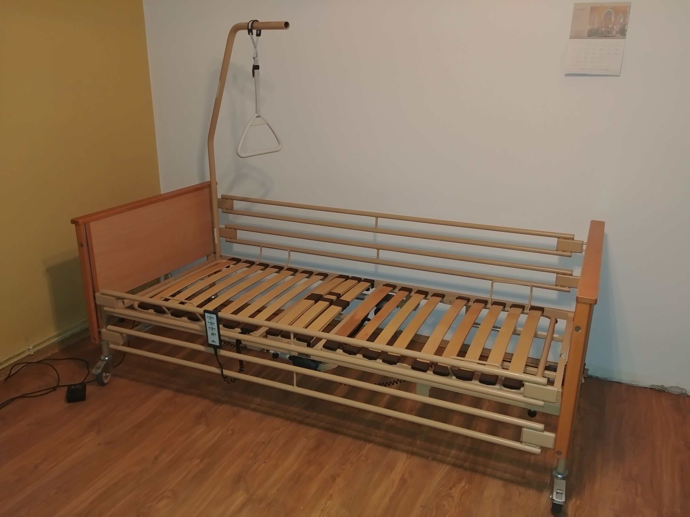
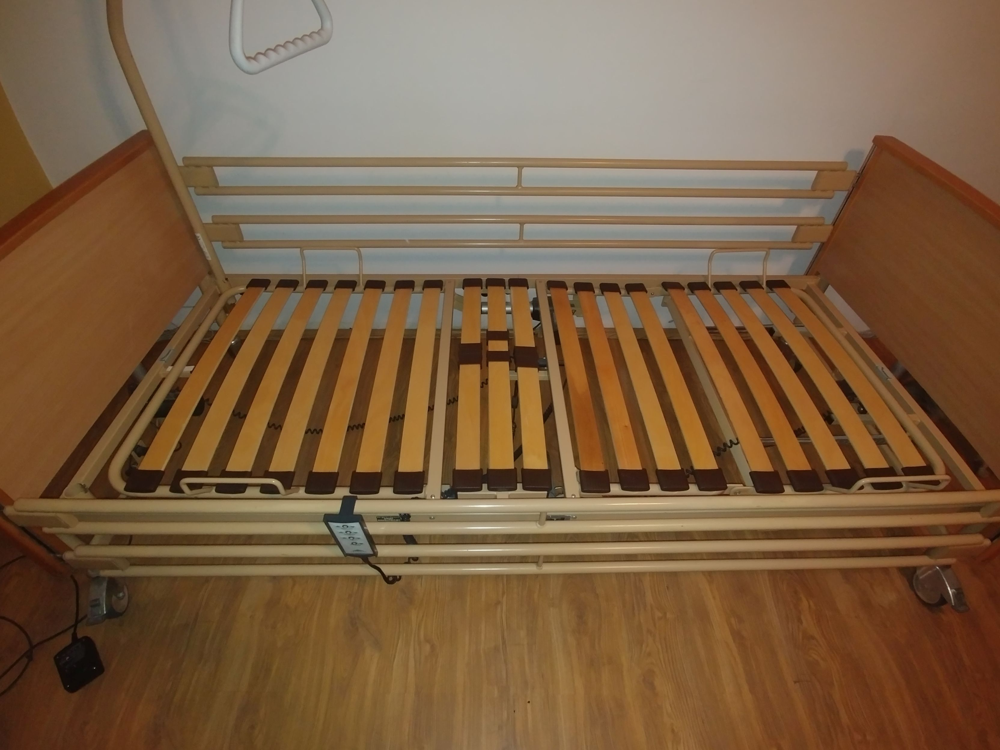

---
layout: default
---
Sprzedam używane łóżko medyczne (rehabilitacyjne) firmy Burmeier model Fortuna z wysięgnikiem.
Opis
Łóżko jest w dobrym stanie, mechanizmy działają bez zarzutu.
- elektryczna regulacja wysokości w zakresie od 40 do 80 cm
- elektrycznie podnoszony zagłówek
- elektrycznie podnoszone leże pod nogami pacjenta z manualną funkcją wyprostu (na grzechotce)
- elektryczna funkcja przechyłu do pozycji Anty-Trendelenburga
- wszystkie funkcje łóżka sterowane elektrycznie przy pomocy pilota
- wykończenia boczków oraz barierki wykonane z drewna, kolor buk
- metalowe barierki z obu stron łóżka
- leże z drewnianymi lamelkami odporne na działanie środków dezynfekujących
- duże koła z możliwością blokady
- otwór na wysięgnik znajduje się z obu stron łóżka
- wysięgnik z trójkątem do podciągania się w komplecie!
- wymiary leża: 90 cm x 200 cm
- Obciążenie robocze: 175 kg (waga pacjenta 135 kg)
Preferowany odbiór osobisty na terenie Poznania, łóżko można złożyć, instrukcja użytkowania i składania:
http://sanitaetshaus-gimple.de/files/5014/0526/0444/GIMPLE_Burmeier_Pflegebett-FORTUNA-24V_Gebrauchsanweisung.pdf

